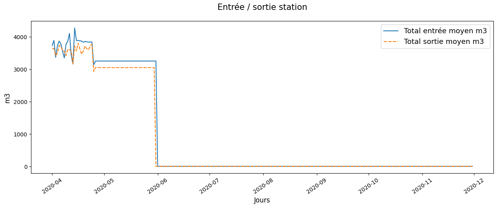
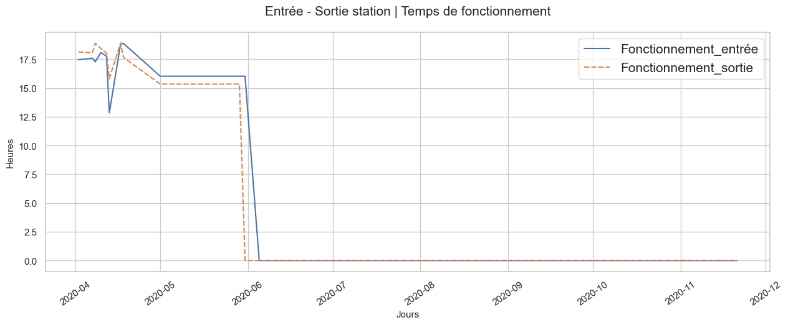

Remarque
Bien que les données soient presque complètes sur la prériode, elles contiennent beaucoup de valeurs nulles à partir de juin.


Remarque
Graph 1 | Résultat obtenu en divisant le total m3 de la journée par le débit moyen m3/h.
Graph 2 | Filtré par les valeurs < 24h -> 80/229 valeurs
Remarque
Graph 2 | Filtré par les valeurs < 24h -> 85/229 valeurs

Remarque
Filtré par les valeurs < 24h de entrée et sortie -> 46/229 valeurs
Remarque
Il n'y a pas d'information sur les données chimiques en entrée car il ny a pas de capteurs. Il ne sont présents qu'en sortie station.

Remarque
Filtré par les valeurs < PH 14 -> 195/215 valeurs
Total m3 entrée et sortie
| Statistiques | Total entrée moyen m3 | Total sortie moyen m3 |
|---|---|---|
| count | 229.00 | 229.00 |
| mean | 905.82 | 842.70 |
| std | 1531.12 | 1440.86 |
| min | 0.00 | 0.00 |
| 25% | 0.00 | 0.00 |
| 50% | 0.00 | 0.00 |
| 75% | 3252.80 | 3050.24 |
| max | 4274.27 | 3801.89 |
Débit m3/h entrée et sortie
| Statistiques | Débit entrée moyen | Débit sortie moyen |
|---|---|---|
| count | 177.00 | 209.00 |
| mean | 36.12 | 67.97 |
| std | 76.17 | 82.19 |
| min | -0.01 | 0.00 |
| 25% | 0.00 | 0.00 |
| 50% | 2.27 | 0.00 |
| 75% | 3.50 | 143.35 |
| max | 245.89 | 203.37 |
Anomalie heures de fonctionnement par jour

Sortie station | PH sans filtre
| Statistiques | PH |
|---|---|
| count | 215.00 |
| mean | 126.36 |
| std | 566.99 |
| min | 0.00 |
| 25% | 0.00 |
| 50% | 0.00 |
| 75% | 6.39 |
| max | 3947.36 |
Sortie station | PH avec filtre < PH 14
| Statistiques | PH |
|---|---|
| count | 195.00 |
| mean | 1.58 |
| std | 2.78 |
| min | 0.00 |
| 25% | 0.00 |
| 50% | 0.00 |
| 75% | 0.00 |
| max | 6.57 |
Sortie station | Chlore
| Statistique | Chlore ORP mV |
|---|---|
| count | 229.00 |
| mean | 110.32 |
| std | 193.93 |
| min | 0.00 |
| 25% | 0.00 |
| 50% | 0.00 |
| 75% | 252.77 |
| max | 609.98 |
Sortie station | Turbidité
| Statistiques | Turbidité FTU |
|---|---|
| count | 228.00 |
| mean | 0.00 |
| std | 0.00 |
| min | 0.00 |
| 25% | 0.00 |
| 50% | 0.00 |
| 75% | 0.01 |
| max | 0.01 |